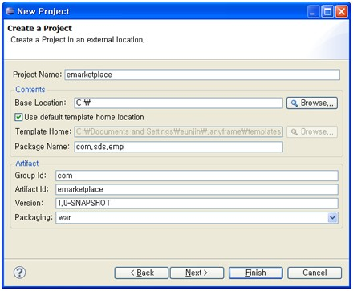
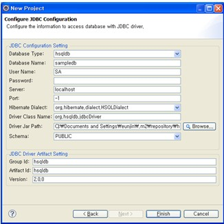
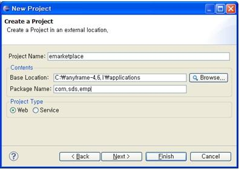
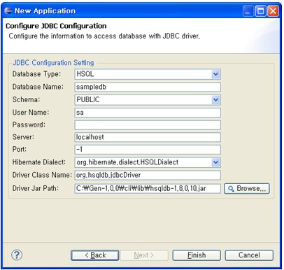
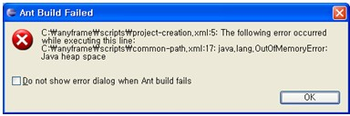
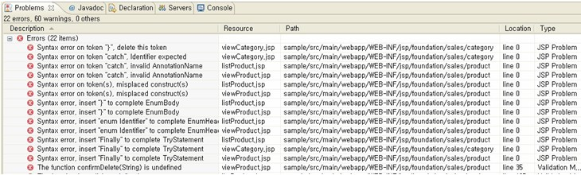

New Project Creation
Anyframe IDE 을 이용해 프로젝트를 생성할 수 있다.
Anyframe IDE는 Window >> Preferences >> IDE 에서 설정한 프로젝트 빌드 타입에 따라 다른 프로젝트 생성 화면을 제공한다.
따라서, 프로젝트를 생성 하기 이전에 프로젝트 빌드 타입을 먼저 설정하도록 한다.
프로젝트 빌드 타입을 설정하는 방법은 Preferences 의 환경설정을 참조한다.
Create new maven project
- File >> New >> Project.. >> Anyframe >> Project 를 선택
- 열린 창에서 프로젝트 생성을 위해 다음과 같은 내용을 입력한다. 아래 항목을 문제없이 기입하는 경우 Next 버튼과 Finish 버튼이 활성화 되며,
Next 버튼을 클릭하면 DB정보를 구성할 수 있는 화면으로 연결된다.
- Project Name: 프로젝트 이름으로, 예제의 경우 emarketplace로 설정하였다.
- Base Location: 프로젝트 생성 위치로, default 경로로 이클립스의 workspace가 지정된다.
default로 지정되는 경로는 꼭 사용할 필요 없이 원하는 경로로 변경 가능하다.
- Use default template home location: 체크된 경우 [사용자 계정 홈 디렉토리]\.anyframe\templates 경로 (ex. C:\Documents and Settings\[user name]\.anyframe\templates)를 디폴트로 지정하며,
체크를 하지 않는 경우 Template Home 을 지정할 수 있는 부분이 활성화됨.
- Template Home: template 파일의 위치 지정.
- Package Name: 대표 패키지 이름으로, 예제의 경우 com.sds.emp로 지정하였다.
- Group Id : pom.xml 에 정의될 프로젝트의 group id.
- Artifact Id : pom.xml 에 정의될 프로젝트의 artifact id.
- Version : pom.xml 에 정의될 프로젝트의 version 정보.
- Packaging : war 또는 jar를 선택한다. war의 경우 웹 타입 프로젝트로 dynamic web 프로젝트가 생성되며 Anyframe Core Plugin이 샘플 코드와 함께 설치된다.
jar의 경우 서비스 타입 프로젝트로 일반 Java 프로젝트가 생성되며 Anyframe Core Plugin 라이브러리만 설치되고 샘플 코드는 설치되지 않는다.

- DB정보를 구성하기 위해 위 화면에서 Next 버튼을 클릭하였다면 다음과 같은 JDBC Configuration 화면이 제공된다.
Finish 버튼을 누르면 프로젝트가 생성된다.
- Database Type: Database 타입으로, hsqldb, oracle, mysql, sybase, db2를 제공하고 있다.
- Database Name: Database 의 이름.
- User Name: DB user 이름.
- Password: 패스워드.
- Server: DB가 설치된 서버 ip 정보, 로컬에서 사용하는 경우 localhost.
- Port: hsqldb의 경우 -1, oracle의 경우 1521, mysql의 경우 3306, sybase는 3000, db2의 경우 50000.
- Hibernate Dialect: Hibernate에서 쿼리 수행 시, DBMS에 최적화된 기능을
제공하기 위해 사용되는 것이 SQL Dialect 이며, 이 Dialect 프라퍼티를 사용하여 해당 DB 별 Dialect
정보를 설정할 수 있다. 각 DB 별 Dialect 클래스가 따로 존재하여 hsqldb를 선택한 경우, 디폴트로
org.hibernate.dialect.HSQLDialect값이 선택된다.(oracle, mysql, sybase, db2 Dialect 도 제공함.)
- Driver Class Name: DB의 드라이버 클래스를 설정해 주기 위한 값으로,
hsqldb의 경우 org.hsqldb.jdbcDriver 값으로 설정된다. Database Type 선택 시 해당 DB에 맞는 값이 세팅된다.
- Driver Jar Path : Anyframe IDE 설치 시 샘플 DB를 위한 hsqldb
Driver Jar 파일이 제공되므로 디폴트로 설정된다. 만약 다른 DB를 사용한다면 해당 DB의 Driver jar
파일로 연결시켜준다.
- Schema: 테이블의 집합인 스키마의 이름.
- Group Id: pom.xml 에 정의될 jdbc driver 의 group id.
- Artifact Id: pom.xml에 정의될 jdbc driver 의 artifact id.
- Version: pom.xml에 정의될 jdbc driver 의 version 정보.

- 프로젝트 생성이 완료되면 Eclipse 내에 프로젝트가 정상적으로 생성되어 Import 되었는지 확인해본다.
Maven 프로젝트의 경우 pom.xml 파일이 존재하며, M2Eclipse 가 활성화된 상태로 import 된다.
M2Eclipse 가 활성화되면 생성된 프로젝트에 Maven Dependencies Libraries가 Build Path로 추가되어 프로젝트가 정상적으로 참조라이브러리를 인식하게 된다.
만약, M2Eclipse 에 문제가 있어 프로젝트가 정상적으로 라이브러리를 인식하지 못한다면,
M2Eclipse를 Disable Dependency Management 한 후 다시 Enable Dependency Management 해 주도록 한다.
(Maven 프로젝트 Context Menu 선택 >> Maven >> Disable Dependency Management or Enable Dependency Management)
Web 타입 프로젝트일 경우 dynamic web 프로젝트로 생성되고, Service 타입 프로젝트일 경우 일반 java 프로젝트로 생성된다.
Create new ant project
- File >> New >> Project.. >> Anyframe >> Project 를 선택
- 열린 창에서 프로젝트 생성을 위해 다음과 같은 내용을 입력한다. 아래 항목을 문제없이 기입하는 경우 Next 버튼과 Finish 버튼이 활성화 되며,
Next 버튼을 클릭하면 DB정보를 구성할 수 있는 화면으로 연결된다.
- Project Name: 프로젝트 이름으로, 예제의 경우 emarketplace로 설정하였다.
- Base Location: 프로젝트 생성 위치로, default경로로 [Anyframe 이 설치된 root 경로]/applications 가 지정된다.
default로 지정되는 경로는 꼭 사용할 필요 없이 원하는 경로로 변경 가능하다.
- Package Name: 패키지 이름으로, 예제의 경우 com.sds.emp로 지정하였다.
- Web: Web 타입 프로젝트 생성하는 경우 선택한다.
Dynamic Web 프로젝트가 생성되며 Anyframe Core Plugin이 샘플 코드와 함께 설치된다.
- Service: 서비스 타입 프로젝트를 생성하는 경우 선택한다. 일반 Java 프로젝트가 생성되며 Anyframe Core Plugin 라이브러리만 설치되고 샘플 코드는 설치되지 않는다.

- DB정보를 구성하기 위해 위 화면에서 Next 버튼을 클릭하였다면 다음과 같은 JDBC Configuration 화면이 제공된다.
Finish 버튼을 누르면 프로젝트가 생성된다.
- Database Type: Database 타입으로, hsqldb, oracle, mysql, sybase, db2를 제공하고 있다.
- Database Name: Database 의 이름
- User Name: DB user 이름
- Password: 패스워드
- Server: DB가 설치된 서버 ip 정보, 로컬에서 사용하는 경우 localhost
- Port: hsqldb의 경우 -1, oracle의 경우 1521, mysql의 경우 3306, sybase는 3000, db2의 경우 50000
- Hibernate Dialect: Hibernate에서 쿼리 수행 시, DBMS에 최적화된 기능을
제공하기 위해 사용되는 것이 SQL Dialect 이며, 이 Dialect 프라퍼티를 사용하여 해당 DB 별 Dialect
정보를 설정할 수 있다. 각 DB 별 Dialect 클래스가 따로 존재하여 hsqldb를 선택한 경우, 디폴트로
org.hibernate.dialect.HSQLDialect값이 선택된다.(oracle, mysql, sybase, db2 Dialect 도 제공함)
- Driver Class Name: DB의 드라이버 클래스를 설정해 주기 위한 값으로,
hsqldb의 경우 org.hsqldb.jdbcDriver 값으로 설정된다. Database Type 선택 시 해당 DB에 맞는 값이 세팅된다.
- Driver Jar Path : Anyframe IDE 설치 시 샘플 DB를 위한 hsqldb
Driver Jar 파일이 제공되므로 디폴트로 설정된다. 만약 다른 DB를 사용한다면 해당 DB의 Driver jar
파일로 연결시켜준다.
- Schema: 테이블의 집합인 스키마의 이름

- 프로젝트 생성이 완료되면 Eclipse 내에 프로젝트가 정상적으로 생성되어 Import 되었는지 확인해본다.
Ant 프로젝트의 경우 build.xml 빌드스크립트가 존재하며,
Web 타입 프로젝트일 경우 dynamic web 프로젝트로 생성되고, Service 타입 프로젝트일 경우 java 프로젝트로 생성된다.
프로젝트 실행 및 설정 파일(project.mf) 확인
생성된 프로젝트를 실행해 보고, 프로젝트 설정 파일(project.mf) 정보도 확인해본다.
- Web 타입 프로젝트일 경우, 서버를 실행하여 프로젝트를 실행해본다.
프로젝트를 선택한 후 마우스 우측 버튼 클릭 >> Run As >> Run On Server 메뉴를 선택하고
이때 기존에 설정되어있던 Tomcat Server(6.0 Version 사용)가 없는 경우 등록해주고 실행하도록
한다.
Web 타입 프로젝트의 경우 서버를 start 했을 때 열리는 web 페이지는 설치된 Plugin 목록이 보이는 화면이다.
프로젝트 생성 이후에 Anyframe IDE Editor의 CRUD Generation 기능을 통해 생성되는 화면은
Plugin 목록 화면 우측의 "Generated CRUD Codes" 항목 하단에 생성된 코드 목록으로 나온다.
- 프로젝트 생성을 통해 만들어진 프로젝트 속성 파일(project.mf)의 프라퍼티를 확인해 본다.
변경하고 싶은 정보가 있을 경우 프라퍼티의 값을 수정하여 수정된 설정 값을 통해 소스가 생성되도록 할 수 있다.
아래 표에 설명된 항목별 내용을 보고 DB 설정을 비롯하여 다양한 공통 속성 값을 변경시킬 수 있다.
현재 DB 속성 정보들의 디폴트 값은 hsqldb 샘플 DB에 대한 속성 값으로 설정되어 있다.
- project.mf - 프로젝트 정보
|
Property Name
|
Description
|
Required
|
Default Value
|
| anyframe.home |
Anyframe을 설치한 루트 폴더로, Maven 프로젝트일 경우는 사용하지 않는다. |
Y
|
Anyframe 을 설치한 root 폴더 경로
|
| project.name |
프로젝트 명 |
Y
|
myproject
|
| project.home |
프로젝트 루트 폴더 명 |
Y
|
[Anyframe 을 설치한 root 폴더 경로]\applications\[프로젝트명]
|
| project.version |
프로젝트 버전 |
Y
|
1.0-SNAPSHOT
|
| project.type |
프로젝트 타입 |
Y
|
web
|
| project.build |
프로젝트 빌드도구 |
Y
|
maven
|
| project.template.home |
프로젝트 및 CRUD 소스 코드 생성 시 기반이 되는 Template 파일이 있는 루트 폴더 경로 |
Y
|
Ant일 경우 [Anyframe 을 설치한 root 폴더 경로]\templates
Maven일 경우 [Local repository 경로]\.anyframe\templates
|
| project.template |
프로젝트 및 CRUD 소스 코드 생성 시 기반이 되는 Template 형태(ex. default, miplatform 등) |
Y
|
default
|
| project.daoframework |
DAO Framework 선택(springjdbc, query, hibernate, ibatis2 중 택일) |
Y
|
springjdbc
|
| package.name |
프로젝트 대표 패키지 명 |
Y
|
프로젝트명
|
| web.context.path |
jetty run 으로 실행시킬때 사용되는 WebContext Path명 |
Y
|
프로젝트 명
|
| offline |
Ant일 경우 온/오프라인 설정을 지정할 수가 있다. 오프라인 설정을 true로 한 경우 remote repository에 접근하여 라이브러리를 새로이 받거나 업데이트할 수 있다. |
Y
|
false
|
- project.mf - DB 정보
|
Property Name
|
Description
|
Required
|
Default Value
|
| db.type |
DB 정보(hsqldb, oracle, mysql, sybase, db2) |
Y
|
hsqldb
|
| db.name |
Database 명 |
Y
|
sampledb
|
| db.schema |
schema 명 |
Y
|
PUBLIC
|
| db.server |
DB에 접근하기 위한 server정보 |
Y
|
localhost
|
| db.port |
DB에 접근하기 위한 port |
Y
|
-1
|
| db.driver |
DB의 드라이버 클래스 설정 |
Y
|
org.hsqldb.jdbcDriver
|
| db.url |
DB에 접근하기 위한 Access URL |
Y
|
jdbc:hsqldb:hsql://localhost/sampledb
|
| db.userId |
DB 사용자 명 |
Y
|
SA
|
| db.password |
DB 사용자 패스워드 |
N
|
N/A
|
| db.lib |
DB에 접근하기 위한 driver jar파일의 경로 |
Y
|
db/hsqldb/hsqldb-2.0.0.jar
|
| db.dialect |
DB별 Hibernate Dialect 클래스 설정 |
Y
|
org.hibernate.dialect.HSQLDialect
|
| db.groupId |
jdbc driver group id 정보로, Maven 프로젝트 일 경우에만 사용되는 값 |
Y
|
hsqldb
|
| db.artifactId |
jdbc driver artifact id 정보로, Maven 프로젝트 일 경우에만 사용되는 값 |
Y
|
hsqldb
|
| db.version |
jdbc driver version 정보로, Maven 프로젝트 일 경우에만 사용되는 값 |
Y
|
2.0.0
|
| db.schema.use |
해당 DB가 Sybase DB일 경우, 지정해야 하는 속성으로 User 정보 셋팅시 DB Schema 정보를 사용할지 여부를 정의한다. 단, Sybase 버전에 따라 속성값은 변경될 수 있음에 유의하도록 한다. |
N
|
false
|
Out of memory
프로젝트 생성 시 다음과 같은 out of memory 에러가 발생할 경우 다음과 같이 조치한다.

- 실행하고 있는 eclipse root 폴더로 이동한다.
- root 폴더 하위의 eclipse.ini 파일의 내용에서 launcher.XXMaxPermSize값(ex.
256M)을 높여서 재설정해준다. 필요 시 메모리 사용 최소값(-Xms)과 최대값(-Xmx)을 증가시켜서 사용하도록 한다.
다음은 Eclipse 3.5.0(Galileo) 버전의 eclipse.ini 파일 예이다.
-clean
-startup>
plugins/org.eclipse.equinox.launcher_1.0.201.R35x_v20090715.jar>
--launcher.library>
plugins/org.eclipse.equinox.launcher.win32.win32.x86_1.0.200.v20090519>
-product>
org.eclipse.epp.package.jee.product>
--launcher.XXMaxPermSize>
256M>
-showsplash>
org.eclipse.platform>
--launcher.XXMaxPermSize>
128m>
-vmargs>
-Dosgi.requiredJavaVersion=1.5>
-Xms400m>
-Xmx512m
|
Project Clean & JSP Validation Error
- 프로젝트 생성 시 다음과 같이 생성된 프로젝트에
 표시가 뜨는 경우,
프로젝트를 clean을 하거나 해당 프로젝트를 close 한 후 다시 open하면 표시가 사라진다. 표시가 뜨는 경우,
프로젝트를 clean을 하거나 해당 프로젝트를 close 한 후 다시 open하면 표시가 사라진다.
☞ Project >> Clean... 수행
☞ 프로젝트 선택 후 오른쪽 마우스 클릭 >> Close Project 후 프로젝트 선택 후 오른쪽 마우스 클릭 >> Open Project
- Problems 에 JSP Validation 에러가 나오는 경우, 실제로 error는 아니지만 eclipse에서 인식을 에러로 하는 것으로
다음과 같이 validation 설정을 변경해주면 된다. Eclipse 내 프로젝트에서 Validation 기능을 사용하게 되면 시간이 많이 소요될 수 있다. 반드시 필요한 경우가 아니고, 속도 향상을 위해서라면
Validation 설정을 모두 Disable All 버튼을 선택하여 사용하지 않는 것으로 설정할 수도 있다. validation 체크를 하고 싶은 항목만 체크하여 사용할 수도 있다.

☞ Window >> Preferences... >> Validation >> JPA Validator, JSP Syntax Validator 의 Build 항목 체크 해제 후 Apply
|